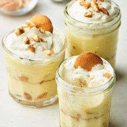

Odin Recipes
Banana Pudding

Description
Quick, easy but delicious dessert.
Nutrition Facts Per Serving: 329 calories; protein 4.2g; carbohydrates 56.9g; fat 9.6g; cholesterol 8.6mg; sodium 205.2mg.
Cook Time: 25 mins
Prep Time: 25 mins
Servings: 20 servings
Ingredients
- 1 (5 ounce) package instant vanilla pudding mix
- 2 cups cold milk
- 1 (14 ounce) can sweetened condensed milk
- 1 tablespoon vanilla extract
- 1 (12 ounce) container frozen whipped topping, thawed
- 1 (16 ounce) package vanilla wafers
- 14 bananas, sliced
Steps
- In a large mixing bowl, beat pudding mix and milk 2 minutes. Blend in condensed milk until smooth.
Stir in vanilla and fold in whipped topping. Layer wafers, bananas and pudding mixture in a glass
serving bowl. Chill until serving.
More recipes
Lasagna
Shrimp Scampi Pasta
Return to homepage